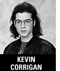
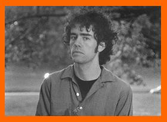
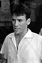

|  | Kevin Corrigan (Narrator) Kevin has an impressive list of credits which include GoodFellas, True Romance, Living in Oblivion, Rhythm Thief, Walking and Talking, (for which he was nominated for a 1997 Independent Spirit Award), Trees Lounge, and Illtown, among others. He co-wrote and stars in Kicked in the Head, which premiered at Cannes. |
|
|  | Danny Maloney (Justin) Danny is an illustrator and a musician. He is currently preparing a show of citscapes. |
|
| Sophie Gallatea (Anna) Sophie studied acting in London and New York, and was recently in Spike Lee's Girl 6. |
||
| Peter Friedrich (Bjorn) Peter stars in Jon Moritsugu's Fame Whore. |
||
|  | Mark Edgington (Director/Writer) A graduate of Yale and NYU Graduate film, Mark Edgington's previous film, The Death of Mr. Frick & Other Hardships, (1992, 35 min.) won numerous prizes and was seen at over 30 international film festivals. It was selected for the Channel Four (UK) Young Filmmaker of the Year Competition and is distributed by Jane Balfour Films of London. He also co-wrote the feature film Sunburn, which is being produced by Jean Doumanian (Deconstructing Harry, The Spanish Prisoner, Wildman Blues). |
|
| Nelson Hume (Director of Photography) Nelson is directing his first feature film, Sunburn (co-written with Mark Edgington), in Dublin and Montauk, Long Island. It is now in post-production. |
||
| George Spyros (Editor) George's short film Par King was seen at many film festivals in 1991. He has just finished directing his first feature film, The Last Days of May. |